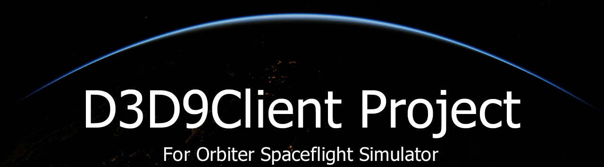

|

| ||||||||||||
InstallationThis is a graphics client/engine project to Orbiter Spaceflight Simulator. To install the client you need to download a package from a list below and extract it in the root folder of the Orbiter. Any previously existing files should be replaced. Also to use a graphics client in Orbiter you need to run "Orbiter_ng.exe" instead of "Orbiter.exe" which uses a build in DX7 Engine. The client must be activated from the Modules tab otherwise you will see a command console while trying to start a scenario. Read further information from /Doc/D3D9Client.pdfD3D9Client development and support thread is located in Orbiter-Forum DirectX RuntimesYou will need a DirectX June 2010 redistributable backage to run the client. If the redistributable package isn't installed in your computer you will receive an error message "The program can't start because d3dx9_43.dll is missing from your computer". Or you may see a pop-up window in Orbiter LaunchPad telling about a missing runtimes. If that happens then download the package from a link below and extract the content of the package in any empty directory you want and then find a Setup.exe and run it. It is a common mistake to forget the run the Setup.exe You can delete the contents of the directory after the setup is completed. The directory is just a temporary storage for the installation files.Here is a link: June 2010 Redistiburables Orbiter BetaWhen using a graphics client with Orbiter Beta, a special attention should be paid that orbiter and client versions do match properly, otherwise the client might not run. The Orbiter version is denoted in a file name, as an example in a name "D3D9ClientBeta28.5-forBETA r84(r1054)" targeted orbiter version (or revision) is "r84".Additional Downloads
MicroTexture Pack for D3D9ClientThis is a planetary surface microtexture package for D3D9Client The package contains textures for the Moon and the Mars. Here is a screen shot before and after installation. Download (~25MB) Screen shots from a community creations and Orbiter art
|